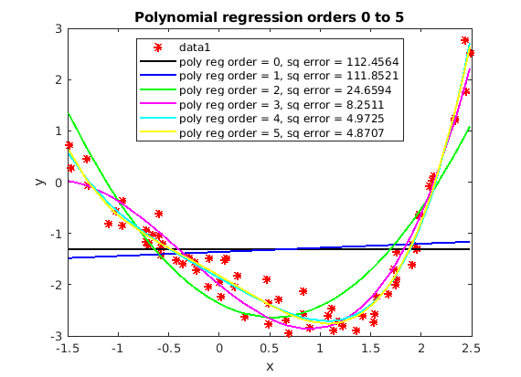
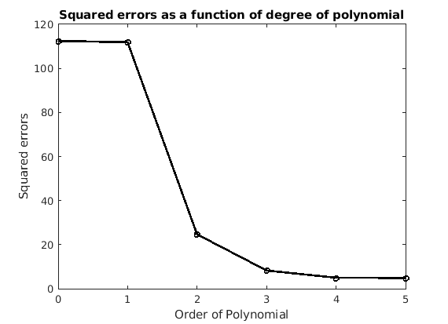

Contents
clear; clc; close all;
a)
load('regress1.mat') figure(1) plot(x, y, 'r*', 'MarkerSize', 6, 'LineWidth', 2) xlabel('x') ylabel('y') title('Polynomial regression orders 0 to 5') hold on; orders = 0:5; X = []; Colors = ['k', 'b', 'g', 'm', 'c', 'y']; Errors = zeros(size(orders, 2), 1); %X = zeros(size(x, 1), orders + 1); for i = orders X = [X x.^i]; %X(:, i+1) = x.^i; [U, S, V] = svd(X); betaOpt = V * pinv(S) * U' * y; predictions = X * betaOpt; prediction_errors = predictions - y; prediction_squared_error = prediction_errors' * prediction_errors; Errors(i+1) = prediction_squared_error; plot(x, predictions, Colors(i+1), ... 'DisplayName', ['poly reg order = ', num2str(i), ', sq error = ', num2str(prediction_squared_error)], ... 'LineWidth', 2) end legend('location', 'north') figure(2); plot(orders, Errors, 'r-o', 'LineWidth', 2, 'MarkerSize', 5) xlabel('Order of Polynomial') ylabel('Squared errors') title('Squared errors as a function of degree of polynomial') 
The squared errors decrease monotonically as the order of the polynomial increases. However, this results in overfitting of the data. The goal of the regression is to model the data as closely as possible with as minimal parameters as we can. From the graph of the models, we see that the models with degree 0 and 1 are an underfit. On the other, models with degrees 4 and 5 are an overfit. Models 2 and 3 are relatively better. Model 3 has a lower error but seems to assume that the data flattens on the lower end of x, which might or might not be the case. Hence Model 2 is "best" fit in this case. Another way to look at this is to look at the datapoint that lies on the sigmoid slope of the square errors and degree. Again from this plot, we find that the "best" fit is Model 2.